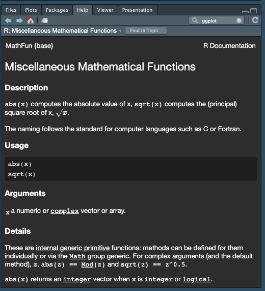
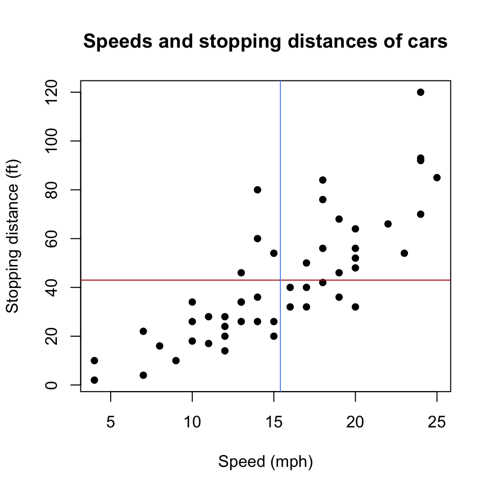

| Evaluation | Points |
|---|---|
| Didn't turn anything in. | 0 |
| Turned in but low effort, ignoring many directions. | 1 |
| Decent effort, followed directions with some minor issues. | 2 |
| Nailed it! | 3 |
Syllabus and Introduction to R, RStudio, and Quarto
CS&SS 508 • Lecture 1
3 October 2023
Victoria Sass
Introductions & Syllabus
Welcome!
- Introductions
- Syllabus
- Lecture 1: Introduction to R, RStudio, and Quarto
Introductions
Let’s start by getting to know each other a bit better. On your index card write the following:
Name and pronouns
Program and year
Experience with programming (in R or more generally)
One word that best describes your feelings about taking this class
Would you rather be able to converse with (non-human) animals, or have lifelong fluency in every (human) language?
Form a group of 3-5 with the people seated around you and introduce yourself to one another. Let’s take about 5-10 minutes to do this.
Syllabus
The syllabus (as well as lots of other information) can be found on our course website:
https://vsass.github.io/CSSS508
Feel free to follow along online as I run through the syllabus!
Course goals
This course is intended to give students a foundational understanding of programming in the statistical language R. This knowledge is intended to be broadly useful wherever you encounter data in your education and career. General topics we will focus on include:
- Developing intermediate data management and visualization skills
- Organizing projects and creating reproducible research
- Cleaning data
- Linking multiple data sets together
- Learning basic programming skills
By the end of this course you should feel confident approaching any data you encounter in the future. We will cover almost no statistics, however it is the intention that this course will leave you prepared to progress in CS&SS or STAT courses with the ability to focus on statistics instead of coding. Additionally, the basic concepts you learn will be applicable to other programming languages and research in general, such as logic and algorithmic thinking.
Logistics: General
Lecture: At the beginning of each week I will post a video lecture covering a specific topic to help you learn fundamental skills, concepts, and principles for learning R. Watch the video at your convenience but definitely before coming to your lab section. The content from lecture each week will also be the basis of the homework assignment due the following week.
Labs: An interactive session where we will practice the skills from the lecture videos in-person in the CSSCR computer lab (Savery 117). These sections will give you all an opportunity to work with each other to learn and practice key skills in R and I will be available to answer questions and help troubleshoot code as well.
- Lab AA: Tuesdays 5:30 - 6:20pm
- Lab AB: Thursdays 4:30 - 5:20pm
Office Hours: Drop-in to ask questions, get advice, or continue discussions from lab/lecture. We can talk in a breakout room or with the group!
- Wednesdays, 3-5pm (on Zoom; link on Canvas
Contact: message me in our Slack Workspace rather than sending me an email. I get far too many emails a day and I don’t want to miss your message!
Logistics: Three Tools for Class
Communication
Learning is collaborative! In addition to being the place to communicate with me, our Slack is also where you can ask one another questions, share resources, and just generally check in with each other about how your adventures with R are going. You can find the link to join our workplace on our course Canvas.
Homework & Peer-Reviews
We will be using Canvas solely for homework & peer review submissions/deadlines and for any links I only want to distribute to those registered for this class (i.e. Slack and Office Hours Zoom).
Course Content
All course content will be accessible on our course website: https://vsass.github.io/CSSS508.
Slack
If you’ve never used Slack before you’ll need to download the desktop app.
A useful quick-start guide can be found here.
Go to our Canvas site for the invite link to join our private workspace.
Schedule
3 October
10 October
17 October
24 October
31 October
7 November
14 November
21 November
28 November
5 December
Week 1: Introduction to R, RStudio, and Quarto
Week 2: Visualizing Data
Week 3: Workflow and Reproducibility
Week 4: Importing, Exporting, and Cleaning Data
Week 5: Manipulating and Summarizing Data
Week 6: Data Structures & Types
Week 7: Working with Text Data
Week 8: Writing Functions
Week 9: Iteration
Week 10: Next Steps
Prerequisites
None 😎
Course Materials
Materials: All course materials will be provided on the course website. This includes:
- Lecture slides and the code used to generate them.
- Homework instructions and/or templates.
- Recommended reading/cheatsheet(s).
- Useful links to other resources.
Laptops: It’s helpful to bring a laptop to class. If you don’t have one, you can use the lab computers during section or borrow one for free from the UW Student Technology Loan Program.
Keep In Mind
The versions of R, RStudio, and Quarto (as well as any packages you have installed) will not necessarily be the same/up to date if you start using a different computer. My advice is to consistently use the same device or make sure to download the latest versions of R, RStudio, and Quarto when using a new machine.
Readings
Textbooks: This course has no textbook. However, I will be suggesting selections from R for Data Science to pair with each week’s topic. While not required, I strongly suggest reading those selections before doing the homework for that week.

Course Assessment
Final grade
Credit/No Credit (C/NC); You need at least 60% to get Credit
Homework (75%; assessed by peers)
9 total homeworks; assessed on a 0-3 point rubric. Assigned at the end of lab sections and due a week later.
Peer Grading (25%; assessed by me)
One per homework, assessed on a binary “satisfactory”/“unsatisfactory” scale. Due 5 days after homework due date.
| Evaluation | Points |
|---|---|
Didn’t follow all peer-review instructions. |
0 |
Peer review is at least one paragraph long, |
1 |
Due Dates and Late Policy
Homework/peer grading instructions and deadlines can be found on the Homework page of the course website. All homework will be turned in on Canvas by 4:30pm the day it is due.
Schedule
We have a bit of a funky schedule due to increasing demand for this course over the years. Thus, instead of a 2-hour interactive lecture/lab each week we have a 50 minute lecture and 2 separate lab sections. To make sure everyone gets to practice the skills we learn in lecture before starting their homework, the due dates for your homework and peer reviews will depend upon which lab section you’re enrolled in. Make sure to check Canvas!
Late Homework Will Not Be Accepted For Credit
Due to the nature of our schedule, peer reviews are randomly assigned when the due date/time is reached. Therefore, if you don’t submit your homework on time, you will not be given a peer’s homework to review and vice versa. Life is messy and complicated though and we all miss deadlines for a variety of reasons. Therefore, you can request that I provide you with feedback on a late assignment (message me on Slack) but you won’t be able to earn any points for that particular homework.
Ugh, peer grading?
Yes, because:
You will write your reports better knowing others will see them
You learn alternate approaches to the same problem
You will have more opportunities to practice and have the material sink in
How to peer review:
- Leave constructive comments: You’ll only get the point if you write at least 1 full paragraph that includes
- Any key issues from the assignment and,
- Points out something positive in your peer’s work.
- Send me a message on Slack if you would like your assignment to be regraded or for me to provide feedback if no peer review was given.
Academic Integrity
Academic integrity is essential to this course and to your learning. Violations of the academic integrity policy include but are not limited to:
- Copying from a peer
- Copying from an online resource
- Using resources from a previous iteration of the course.
I hope you will collaborate with peers on assignments and use Internet resources when questions arise to help solve issues. The key is that you ultimately submit your own work.
Anything found in violation of this policy will be automatically given a score of 0 with no exceptions. If the situation merits, it will also be reported to the UW Student Conduct Office, at which point it is out of my hands. If you have any questions about this policy, please do not hesitate to reach out and ask.
Classroom Environment
I’m committed to fostering a friendly and inclusive classroom environment in which all students have an equal opportunity to learn and succeed. This course is an attempt to make an often difficult and frustrating experience (learning R for the first time) less obfuscating, daunting, and stressful. That said, learning happens in different ways at at a different pace for everyone. Learning is also a collaborative and creative process and my aim is to create an environment in which you all feel comfortable asking questions of me and each other. Treat your peers and yourself with empathy and respect as you all approach this topic from a range of backgrounds and experiences (in programming and in life).
Classroom Environment…
Names & Pronouns: Everyone deserves to be addressed respectfully and correctly. Fill out your profile on Slack with your picture, preferred name (as your Display Name), and correct gender pronouns so we can all be on the same page!
Covid Considerations: I will follow all University rules and procedures regarding Covid, which may or may not change during the quarter. I also recognize that Covid creates unique circumstances and concerns for each of us, which may limit your ability to fully attend or participate in this course. You never need to apologize to me for anything pandemic-related. If there is something I can do to make you feel more comfortable during class, please let me know!
Diversity: Diverse backgrounds, embodiments, and experiences are essential to the critical thinking endeavor at the heart of university education. Therefore, I expect you to follow the UW Student Conduct Code in your interactions with your colleagues and me in this course by respecting the many social and cultural differences among us, which may include, but are not limited to: age, cultural background, disability, ethnicity, family status, gender identity and presentation, body size/shape, citizenship and immigration status, national origin, race, religious and political beliefs, sex, sexual orientation, socioeconomic status, and veteran status.
Accommodations
Accessibility & Accommodations: Your experience in this class is important to me. If you have already established accommodations with Disability Resources for Students (DRS), please communicate your approved accommodations to me at your earliest convenience so we can discuss your needs in this course. If you have not yet established services through DRS, but have a temporary health condition or permanent disability that requires accommodations (conditions include but not limited to; mental health, attention-related, learning, vision, hearing, physical or health impacts), you are welcome to contact DRS at 206-543-8924, uwdrs@uw.edu, or through their website.
Religious Accommodations: Washington state law requires that UW develop a policy for accommodation of student absences or significant hardship due to reasons of faith or conscience, or for organized religious activities. The UW's policy, including more information about how to request an accommodation, is available at Religious Accommodations Policy. Accommodations must be requested within the first two weeks of this course using the Religious Accommodations Request form.
Help and Feedback
Getting Help: If at any point during the quarter you find yourself struggling to keep up, please let me know! I am here to help. A great place to start this process is by chatting after class, coming to office hours, or message meon Slack.
Also, help one another as you navigate this course! Slack allows you to chat directly with one another, send messages to the whole class about specific topics (see the already-created # r-code-questions and # quarto-questions channels), send snippets of code or entire files to one another, and much more.
Feedback
If you have feedback on any part of this course or the classroom environment I want to hear it! You can message me directly on Slack or send me an anonymous message here. Additionally, I will send out a mid-quarter feedback survey on Slack around Week 5.
Asking Questions
Don’t ask like this:
tried lm(y~x) but it iddn’t work wat do
Instead, ask like this:
y <- seq(1:10) + rnorm(10) x <- seq(0:10) model <- lm(y ~ x)Running the block above gives me the following error, anyone know why?
Error in model.frame.default(formula = y ~ x, drop.unused.levels = TRUE) : variable lengths differ (found for 'x')
FYI
If you ask me a question directly over Slack I may send out your question (anonymously) along with my answer to the whole course.
Questions?
Introduction to R, RStudio, and Quarto
A Note on Slide Formatting
Bold usually indicates an important vocabulary term. Remember these!
Italics indicate emphasis but also are used to point out things you must click with a mouse.
- For example: “Please click File > Print”
Code represents R code you could use to perform actions.
- For example: “Press
Ctrl-Pto open the print dialogue.”
A Note on Slide Formatting
Bold usually indicates an important vocabulary term. Remember these!
Italics indicate emphasis but also are used to point out things you must click with a mouse.
- For example: “Please click File > Print”
Code represents R code you could use to perform actions.
- For example: “Press
Ctrl-Pto open the print dialogue.”
Code chunks that span the page represent actual R code embedded in the slides.
A Note on How to Use These Slides
Since the lectures for this class were created using Quarto, there are numerous built-in features meant to facilitate your learning, particularly of R.
- The in the bottom left-hand corner will show you a table of contents for the entire slideshow, allowing you to find what you’re looking for more easily.
- Anything followed by is a link to an external site. You will be shown a preview (if available) within the presentation first and from there you can open the link in a new tab to explore it more.
- Relatedly, any
Rfunction incode-looking fontwill be linked to it’s documentation (which is the same as its help page withinRStudio) so you can quickly learn more about any function we cover in class directly through the lecture slides. (Note: not all of these work in the preview so you may have to open a new tab).
- Relatedly, any
- If you hover over any chunk of
Rcode embedded in the slides you will see a which you can click to copy the code. You can then paste it in your own Quarto document orRscript to run it in your session of RStudio. - To get a PDF version of these slides click File > Print from your internet browser, select Save as PDF as the Destination or Printer, and make sure the Layout is set to Landscape. (Note: the PDF Export Mode in Tools actually cuts off content which is why I’m not recommending it)
- Clicking on the in the bottom left-hand corner allows you to draw directly on the slides, in a very Microsoft Paint kind of way. See if it’s useful but I make no promises!
- Type ? at any time to see all the available key-board shortcuts.
- Some content may be scrollable (like this page!). If this is the case I will put the icon in the title to let you know.
Why R?
R is a programming language built for statistical computing.
If one already knows Stata or similar software, why use R?
- R is free.
- R has a very large community.
- R can handle virtually any data format.
- R makes replication easy.
- R is a language so it can do everything.
- R skills transfer to other languages like Python and Julia.
R Studio
R Studio is a “front-end” or integrated development environment (IDE) for R that can make your life easier.
We’ll show RStudio can…
- Organize your code, output, and plots
- Auto-complete code and highlight syntax
- Help view data and objects
- Enable easy integration of R code into documents with Quarto
It can also…
Manage
gitrepositoriesRun interactive tutorials
Handle other languages like C++, Python, SQL, HTML, and shell scripting
Selling You on Quarto
Built upon many of the developments of the R Markdown ecosystem, Quarto distills them into one coherent system and additionally expands its functionality by supporting other programming languages besides R, including Python and Julia.

Selling You on Quarto
The ability to create Quarto files in R is a powerful advantage. It allows us to:
- Document analyses by combining text, code, and output
- No copying and pasting into Word
- Easy for collaborators to understand
- Show as little or as much code as you want
- Produce many different document types as output
- PDF documents
- HTML webpages and reports
- Word and PowerPoint documents
- Presentations (like these slides)
- Books
- Theses/Dissertations 😉🎓
- Websites (like the one for this course!)
- Works with LaTeX and HTML for math and more formatting control
Downloading R and RStudio
If you don’t already have R and RStudio on your machine, now is the time to do so!
- Go to the course homepage, https://vsass.github.io/CSSS508
- Click the Download R link and download R to your machine.
- Afterwards, click the Download RStudio link and download RStudio to your machine.
- Lastly, click the Download Quarto link and download Quarto to your machine.
Getting Started
Open up RStudio now and choose File > New File > R Script.
Then, let’s get oriented with the interface:
Top Left: Code editor pane, data viewer (browse with tabs)
Bottom Left: Console for running code (
>prompt)Top Right: List of objects in environment, code history tab.
Bottom Right: Tabs for browsing files, viewing plots, managing packages, and viewing help files.
Editing and Running Code
There are several ways to run R code in RStudio:
- Highlight lines in the editor window and click
 Run at the top right corner of said window or hit
Run at the top right corner of said window or hit Ctrl+Enteror⌘+Enterto run them all.
 Run at the top right corner of said window or hit
Run at the top right corner of said window or hit Editing and Running Code
There are several ways to run R code in RStudio:
Highlight lines in the editor window and click
 Run at the top right corner of said window or hit
Run at the top right corner of said window or hit Ctrl+Enteror⌘+Enterto run them all.With your caret1 on a line you want to run, hit
Ctrl+Enteror⌘+Enter. Note your caret moves to the next line, so you can run code sequentially with repeated presses.
- Type individual lines in the console and press
Enter.
- In quarto documents, click within a code chunk and click the green arrow to run the chunk. The button beside that ( ) runs all prior chunks.
The console will show the lines you ran followed by any printed output.
Incomplete Code
If you mess up (e.g. leave off a parenthesis), R might show a + sign prompting you to finish the command:
Finish the command or hit Esc to get out of this.
R as a Calculator
In the console, type 123 + 456 + 789 and hit Enter.
The [1] in the output indicates the numeric index of the first element on that line.
Now in your blank R document in the editor, try typing the line sqrt(400) and either clicking Run or hitting Ctrl+Enter or ⌘+Enter.
Functions
sqrt() is an example of a function in R.
Arguments are the inputs to a function. In this case, the only argument to sqrt() is x which can be a number or a vector of numbers.
The basic template of a function is
function_name(argument1, argument2 = value2, argument3 = value3...)
Something to Note
Functions can have a wide range of arguments and some are required for the function to run, while others remain optional. You can see from each functions’ help page which are not required because they will have an = with some default value pre-selected. If there is no = it is up to the user to define that value and it’s therefore a required specification.
Help
If we didn’t have a good guess as to what sqrt() will do, we can type ?sqrt in the console and look at the Help panel on the right.
If you’re trying to look up the help page for a function and can’t remember its name you can search by a keyword and you will get a list of help pages containing said keyword.

Help
Help files provide documentation on how to use functions and what functions produce. They will generally consist of the following sections:
- Description - What does it do?
- Usage - How do you write it?
- Arguments - What arguments does it take; which are required; what are the defaults?
- Details - A more in-depth description
- Value - What does the function return?
- See Also - Related R functions
- Examples - Example (& reproducible) code
Objects
R stores everything as an object, including data, functions, models, and output.
Operators like <- are functions that look like symbols but typically sit between their arguments (e.g. numbers or objects) instead of having them inside () like in sqrt(x).
We do math with operators, e.g., x + y.
+ is the addition operator!
Calling Objects
You can display or “call” an object simply by using its name.
Naming Objects
Object names must begin with a letter and can contain letters, numbers, ., and _.
Try to be consistent in naming objects. RStudio auto-complete means long, descriptive names are better than short, vague ones! Good names save confusion later!
-
snake_case, where you separate lowercase words with
_is a common and practical naming convention that I strongly recommend.
Remember that object names are CaSe SeNsItIvE!!
Also, TYPOS MATTER!
Using Objects
An object’s name represents the information stored in that object, so you can treat the object’s name as if it were the values stored inside. . . .
Vectors
A vector is one of many data types available in R. Specifically, it is a series of elements, such as numbers, strings, or booleans (i.e. TRUE, FALSE).
You can create a vector using the function c() which stands for “combine” or “concatenate”. . . .
If you name an object the same name as an existing object, it will overwrite it.
More Complex Objects
There are other, more complex data types in R which we will discuss later in the quarter! These include matrices, arrays, lists, and dataframes.
Most data sets you will work with will be read into R and stored as a dataframe, so this course will mainly focus on manipulating and visualizing these objects.
Quarto
Quarto Documents
Let’s try making an Quarto file:
- Choose File > New File > Quarto Document…
- Make sure HTML Output is selected
- In the Title box call this test document
my_first_qmd.qmdand click Create - Save this document somewhere (you can delete it later) (either with File > Save or clicking towards the top left of the source pane)
- Watch the progress in the Background Jobs tab of the console pane, then gaze upon your result!
Quarto Headers
The header of an .qmd file is a YAML1code block, and everything else is part of the main document.
To mess with global formatting, you can modify the header2.
Quarto Syntax
Quarto Syntax1 Continued
Output
- Ordered lists
- Are real easy
- Even with sublists
- Or with lazy numbering
- Unordered lists
- Are also real easy
- Also even with sublists
- And subsublists
- Also even with sublists
Formulae and Syntax
Output
Include math \(y= \left( \frac{2}{3} \right)^2\) inline.
Or centered on your page like so:
\[\frac{1}{n} \sum_{i=1}^{n} x_i = \bar{x}_n\]
Or write code-looking font.
Or a block of code:
y <- 1:5
z <- y^2Quarto Tinkering
Quarto docs can be modified in many ways. Visit these links for more information.
R Code in Quarto
Inside Quarto, lines of R code are called chunks. Code is sandwiched between sets of three backticks and {r}. This chunk of code…
Produces this output in your document:
Chunk Options
Chunks have options that control what happens with their code. They are specified as special comments at the top of a block. For example:
Chunk Options
Some useful and common options include:
echo: false- Keeps R code from being shown in the documenteval: false- Shows R code in the document without running itinclude: false- Hides all output but still runs code (good forsetupchunks where you load packages!)output: false- Doesn’t include the results of that code chunk in the outputcache: true- Saves results of running that chunk so if it takes a while, you won’t have to re-run it each time you re-render the documentfig.height: 5, fig.width: 5- modify the dimensions of any plots that are generated in the chunk (units are in inches)fig.cap: "Text"- add a caption to your figure in the chunk
Playing with Chunk Options
Try adding or changing the chunk options for the two chunks in my_first_Rmd.qmd and re-rendering to check what happens.
In-Line R code
Sometimes we want to insert a value directly into our text. We do that using code in single backticks starting off with r.
Four score and seven years ago is the same as `r 4*20 + 7` years.Four score and seven years ago is the same as 87 years.
The value of `x` rounded to the nearest two decimals is `r round(x, 2)`.The value of x rounded to the nearest two decimals is 8.77.
This is Amazing!
Having R dump values directly into your document protects you from silly mistakes:
- Never wonder “how did I come up with this quantity?” ever again: Just look at your formula in your .qmd file!
- Consistency! No “find/replace” mishaps; reference a variable in-line throughout your document without manually updating if the calculation changes (e.g. reporting sample sizes).
- You are more likely to make a typo in a “hard-coded” number than you are to write R code that somehow runs but gives you the wrong thing.
Example: Keeping Dates
In your YAML header, make the date come from R’s Sys.time() function by changing:
date: "October 3, 2023"to
date: "`r Sys.time()`"Base R and Packages
Base R
Simply by downloading R you have access to what is referred to as Base R. That is, the build-in functions and datasets that R comes equipped with, right out of the box.
Examples that we’ve already seen include <-, sqrt(), +, Sys.time(), and summary() but there are obviously many many more.
You can see a whole list of what Base R contains by running library(help = "base") in the console.
A Base R Dataset: cars
In the sample Quarto document you are working on, we can load the built-in data cars, which loads as a dataframe, a type of object mentioned earlier. Then, we can look at it in a couple different ways.
data(cars) loads this dataframe into the Global Environment.
View(cars) pops up a Viewer tab in the source pane (“interactive” use only, don’t put in Quarto document!).
A Base R Dataset: cars
str() displays the structure of an object:
A Base R Dataset: cars
str() displays the structure of an object:
'data.frame': 50 obs. of 2 variables:
$ speed: num 4 4 7 7 8 9 10 10 10 11 ...
$ dist : num 2 10 4 22 16 10 18 26 34 17 ...summary() displays summary information 1:
Base R is pretty…Basic
hist() generates a histogram of a vector. Note you can access a vector that is a column of a dataframe using $, the extract operator.


Base R is pretty…Basic
We can try and make this histogram a bit more appealing by adding more arguments and their specifications.
Base R is pretty…Basic
We can also make scatterplots to show the relationship between two variables.
plot(dist ~ speed, data = cars,
xlab = "Speed (mph)",
ylab = "Stopping distance (ft)",
main = "Speeds and stopping distances of cars",
pch = 16) # Point shape
abline(h = mean(cars$dist), col = "firebrick") # add horizontal line
abline(v = mean(cars$speed), col = "cornflowerblue") # add vertical lineNote
dist ~ speed is a formula of the type y ~ x. The first element (dist) gets plotted on the y-axis and the second (speed) goes on the x-axis. Regression formulae follow this convention as well!

Base R is pretty…Basic
We can also make scatterplots to show the relationship between two variables.
plot(dist ~ speed, data = cars,
xlab = "Speed (mph)",
ylab = "Stopping distance (ft)",
main = "Speeds and stopping distances of cars",
pch = 16) # Point shape
abline(h = mean(cars$dist), col = "firebrick") # add horizontal line
abline(v = mean(cars$speed), col = "cornflowerblue") # add vertical linePackages
What makes R so powerful though is it’s extensive library of packages. Due to it’s open-source nature, anyone (even you!) can write a package that others can use.
Packages contain pre-made functions and/or data that can be used to extend Base R’s capabilities.
Base R/Package Analogy
Base R is like creating a recipe from scratch: going to the store and buying all the ingredients and cooking it by yourself. Using a package is more akin to using a meal-kit service: you still have to cook but you’re provided with the ingredients and step-by-step instructions for making the recipe.
As of this writing there are 19,940 available packages!
Installing Packages
To use a package outside of Base R you need to do two things:
Installing Packages
To use a package outside of Base R you need to do two things:
- Download the package from
CRAN(TheComprehensiveRArchiveNetwork) by running the following in your console:1
install.packages("package_name")Installing Packages
To use a package outside of Base R you need to do two things:
- Download the package from
CRAN(TheComprehensiveRArchiveNetwork) by running the following in your console:1
install.packages("package_name")This downloads the package to your local machine (or the server of whatever remote machine you’re using). Thus, you only every need to do it once for each package2!
Installing Packages
To use a package outside of Base R you need to do two things:
- Download the package from
CRAN(TheComprehensiveRArchiveNetwork) by running the following in your console1:
install.packages("package_name")This downloads the package to your local machine (or the server of whatever remote machine you’re using). Thus, you only every need to do it once for each package2!
- Once a package is installed, you need to load it into the current session of
Rso you can use it. You’ll do this by putting the following in anRScript or embedded in a code chunk in a Quarto file:
Another Base R Dataset: swiss
Let’s switch gears to the swiss data frame built in to R.
First, use ?swiss to see what things mean.
Then, load it using data(swiss)
Looking at swiss
gt Package
Let’s make a table that’s more polished than the code-y output R automatically gives us. To do this, we’ll want to install our first package called gt. In the console, run: install.packages("gt").
Making cleaner tables
Nesting Functions
Note that we put the summary(swiss) function call inside the as.data.frame.matrix() call which all went into the gt() function. This is called nesting functions and is very common. I’ll introduce a method next week to avoid confusion from nesting too many functions inside each other.
What’s as.data.frame.matrix() Doing?
gt() takes as its first argument a data.frame-type object, while summary() produces a table-type object. Therefore, as.data.frame.matrix() was additionally needed to turn the table into a data.frame.
| Fertility | Agriculture | Examination | Education | Catholic | Infant.Mortality |
|---|---|---|---|---|---|
| Min. :35.00 | Min. : 1.20 | Min. : 3.00 | Min. : 1.00 | Min. : 2.150 | Min. :10.80 |
| 1st Qu.:64.70 | 1st Qu.:35.90 | 1st Qu.:12.00 | 1st Qu.: 6.00 | 1st Qu.: 5.195 | 1st Qu.:18.15 |
| Median :70.40 | Median :54.10 | Median :16.00 | Median : 8.00 | Median : 15.140 | Median :20.00 |
| Mean :70.14 | Mean :50.66 | Mean :16.49 | Mean :10.98 | Mean : 41.144 | Mean :19.94 |
| 3rd Qu.:78.45 | 3rd Qu.:67.65 | 3rd Qu.:22.00 | 3rd Qu.:12.00 | 3rd Qu.: 93.125 | 3rd Qu.:21.70 |
| Max. :92.50 | Max. :89.70 | Max. :37.00 | Max. :53.00 | Max. :100.000 | Max. :26.60 |
gt’s Version of head() and tail()
Fertility Agriculture Examination Education Catholic
Courtelary 80.2 17.0 15 12 9.96
Delemont 83.1 45.1 6 9 84.84
Franches-Mnt 92.5 39.7 5 5 93.40
Moutier 85.8 36.5 12 7 33.77
Neuveville 76.9 43.5 17 15 5.16
Porrentruy 76.1 35.3 9 7 90.57
Infant.Mortality
Courtelary 22.2
Delemont 22.2
Franches-Mnt 20.2
Moutier 20.3
Neuveville 20.6
Porrentruy 26.6| Fertility | Agriculture | Examination | Education | Catholic | Infant.Mortality | |
|---|---|---|---|---|---|---|
| 1 | 80.2 | 17.0 | 15 | 12 | 9.96 | 22.2 |
| 2 | 83.1 | 45.1 | 6 | 9 | 84.84 | 22.2 |
| 3 | 92.5 | 39.7 | 5 | 5 | 93.40 | 20.2 |
| 4..44 | ||||||
| 45 | 35.0 | 1.2 | 37 | 53 | 42.34 | 18.0 |
| 46 | 44.7 | 46.6 | 16 | 29 | 50.43 | 18.2 |
| 47 | 42.8 | 27.7 | 22 | 29 | 58.33 | 19.3 |
👋 Bye Bye as.data.frame.matrix()
We no longer need as.data.frame.matrix() since head(swiss) produces a data.frame-type object, which is what both gt() and gt_preview() take as their first argument.
Homework
Suggested Reading & Useful Resources
Suggested Reading (from R for Data Science (2e))
Chapter 1: Introduction • Chapter 29: Quarto
Resources
Cheatsheets
Additional Reading
Hands-On Programming with R - A great book for someone with no experience with R or programming
Crowdsource Help
Homework #1
Write up a .qmd file showing some exploratory analyses of the Swiss fertility data. Upload both the .qmd file and the .html file to Canvas. You must upload BOTH for credit.
Mix in-line R calculations, R output, and plots with text describing the relationships you see. Include at least two plots. You are encouraged to include more! You must use in-line R calculations/references at least once (e.g. functions like nrow(), mean(), sd(), cor(), median(), min()) and may not hard-code any numbers referenced in your text.
Your document should be pleasant for a peer to look at, with some organization using sections or lists, and all plots labeled clearly. Use chunk options echo and output to limit the code/output you show in the .html. Discussion of specific values should be summarized in sentences in your text—not as printed code and output—and rounded so as not to be absurdly precise (e.g. round x with round(x, 2)).
Grading Rubrics
Homework
You’ll be assigning one of your fellow students a grade based on the following rubric:
| Evaluation | Points |
|---|---|
| Didn't turn anything in. | 0 |
| Turned in but low effort, ignoring many directions. | 1 |
| Decent effort, followed directions with some minor issues. | 2 |
| Nailed it! | 3 |
Grading Rubrics
Peer-Review
I will be assigning you a grade for your peer-review based on the following rubric:
| Evaluation | Points |
|---|---|
Didn’t follow all peer-review instructions. |
0 |
Peer review is at least one paragraph long, |
1 |
Due dates
| # | Section AA | Section AB | ||
|---|---|---|---|---|
| Homework Due | Peer Review Due | Homework Due | Peer Review Due | |
| 1 | 10 October | 15 October | 12 October | 17 October |
| 2 | 17 October | 22 October | 19 October | 24 October |
| 3 | 24 October | 29 October | 26 October | 31 October |
| 4 | 31 October | 5 November | 2 November | 7 November |
| 5 | 7 November | 12 November | 9 November | 14 November |
| 6 | 14 November | 19 November | 16 November | 21 November |
| 7 | 21 November | 26 November | 23 November | 28 November |
| 8 | 28 November | 3 November | 30 November | 5 November |
| 9 | 5 December | 10 December | 7 December | 12 December |
Comments
Anything writen after
#1 will be ignorned by R.Comments help collaborators and future-you understand what, and more importantly, why you are doing what you’re doing with that specific line/chunk of code.
Additionally, comments allow you to explain your overall coding plan and record anything important that you’ve discovered along the way.